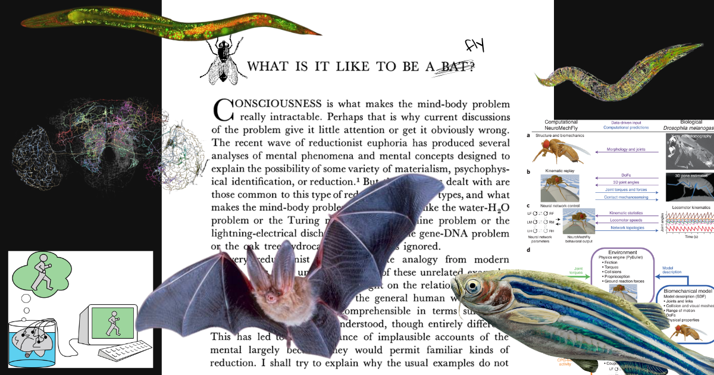
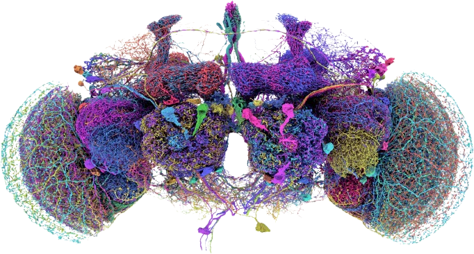
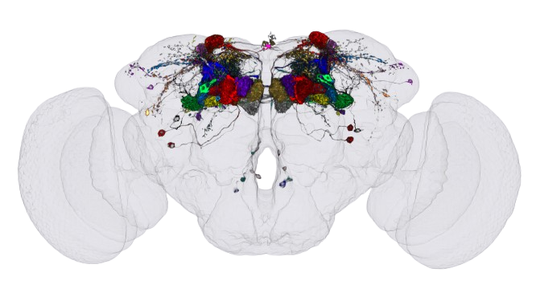
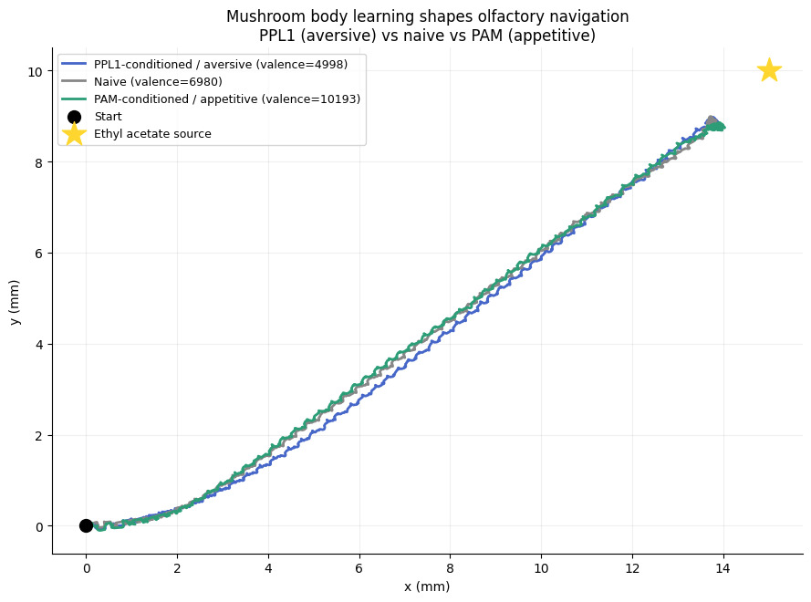

What is it like to be a fly?

A question that Nagel asked (in the context of a bat) and came to the conclusion that qualia of one being cannot be "experienced" by another. Whether this is a failure of our current framework or an inherent property of qualia itself, he couldn't say. And to be fair, it seems more like an engineering problem than an ontological one. We can't experience what a fly experiences, however, we can map the physical substrate that produces that experience. Perhaps the study of the underlying substrate might lead to some understanding of qualia and bridge the gap between observations of experience and experience in itself.
With this assumption in mind, we did some literature review and came across many projects and ideas that solve and discuss a similar problem. Most of what we found were either dead projects that attempt studying full brain simulations by mapping every neuron + synapse of smaller organisms and then observing emergent behaviour in a simulated environment, brain-in-a-vat-esque thought experiments and a lot of philosophers who attempt to be rigorous but end up going around in circles with definitions.
The most promising project with an active community was "NeuroMechFly", a digital twin of the adult fruit fly Drosophila melanogaster. It gave us a physics-grounded body with working olfactory sensors, proprioception, and a modular brain interface.
This is relevant here because we wanted to start with something basic. Flies are probably the least interesting creatures philosophically, with debates about whether they are conscious or not — we use flies here because it's tractable. There has been a significant amount of study done on the brain of the fruit fly, which has compounded and led to the mapping of the entire fly brain connectome. Read more here and here.
The fruit fly brain has been mapped at synaptic resolution. For our experiment we used the Janelia hemibrain v1.2.1, which covers the central brain reconstructed via electron microscopy at 8nm resolution. This gave us the raw connectivity data we needed to wire up a biologically grounded brain controller, which we'll get into shortly. In the NeuroMechFly paper they mention that "connectome and physiology-constrained olfactory system models" are future work — this provides an obvious direction for our experiment, i.e. writing a physiology grounded simulation for the flies.

The Drosophila Connectome

The Mushroom Body
We took the synaptic weight matrix of the mushroom body, a region of the fly brain responsible for associative learning and memory, from the hemibrain dataset. The mushroom body works roughly like this: Kenyon Cells (KCs) are the main neurons that receive odor information and encode it as a sparse pattern of activity. They project onto Mushroom Body Output Neurons (MBONs), which drive approach or avoidance behaviour depending on which ones are active. The weights between KCs and MBONs are what get modified during learning. From the hemibrain we pulled a matrix of 1,927 KCs projecting onto 71 MBONs, with every synapse counted under electron microscopy.
The learning is gated by a third population, the Dopaminergic Neurons (DANs). Two clusters are relevant here: PPL1 neurons signal aversive events and PAM neurons signal appetitive ones. During conditioning, a KC has to both fire during odor presentation and receive strong dopaminergic input to undergo any weight change. This constraint falls directly out of the real DAN->KC connectivity in the dataset. PPL1 activity depresses the KC->MBON connections that drive approach, weakening the attractive signal for that odor. PAM activity does the opposite, potentiating them.
The synaptic weight matrix encodes a little more than connectivity — after conditioning, it encodes memory. The concept of an engram, first proposed by Richard Semon in 1904 and later operationalised by Karl Lashley's search for the physical substrate of memory, refers to the physical trace that a learned experience leaves in the nervous system. For a long time this remained a theoretical construct, but modern connectomics gives us something concrete: a weight matrix where specific synapses have been depressed or potentiated by a conditioning protocol. The conditioned weight matrix is the engram, expressed as a pattern of synaptic weights across the mushroom body.
To compute which KCs fire for a given odor, we used the DoOR database (Database of Odorant Responses), which contains electrophysiological measurements of 78 Drosophila olfactory receptor types across 693 chemicals. Each receptor type projects to exactly one glomerulus in the antennal lobe, and each glomerulus is served by one class of projection neuron. We mapped receptors to glomeruli using Couto et al. 2005, computed PN activation from the receptor responses, and multiplied through the real PN→KC connectivity matrix from the hemibrain. The result is a sparse binary vector — roughly 97 out of 1,927 KCs fire for any given odor, with the specific subset determined entirely by receptor biology and real connectome wiring. No parameters were tuned. The simulation knows what ethyl acetate smells like to a fly because the fly's actual olfactory hardware tells it. The mapping from simulated odor concentration to KC activation is our own construction, the olfactory pipeline is biologically grounded but not independently validated against in vivo calcium imaging data. Validating this interface against real electrophysiology is a next step before we can treat this as a unified platform rather than a proof of concept.
We built three versions of this "engram": naive, aversively conditioned on ethyl acetate via PPL1, and appetitively conditioned via PAM, each run for 12 trials. We then plugged each into a simulated fly body in NeuroMechFly v2 and placed all three in the same arena with a single ethyl acetate source. The only difference between the three flies was the weight matrix.
All three flies reached the source. The net valence for each condition was computed as:
valence = (kc_pattern @ W)[approach_idx].sum() - (kc_pattern @ W)[avoidance_idx].sum()giving roughly 5,000 for PPL1, 6,980 for naive, and 10,193 for PAM. The naive fly approached with moderate consistency, the PPL1-conditioned fly showed more lateral deviation and a longer path, and the PAM-conditioned fly took the most direct route.
The connectome only enters the controller as the gain on the steering signal:
gain = clip(net / 100, -500, 500)where net is the approach minus avoidance MBON drive computed at every timestep. For our three conditions this gives gain = 50 (PPL1), 70 (naive), and 102 (PAM). Higher valence means stronger gain, which means the fly steers more decisively for any given antenna asymmetry.
The lateral steering bias is then:
bias = gain * delta
bias_norm = tanh(bias²) * sign(bias)where delta is the normalised left-right antenna asymmetry, (L - R) / mean. The square is inside the tanh — small biases get suppressed quadratically before the tanh, while large biases saturate near ±1 with the original sign restored. This produces a sharp threshold: the fly only commits to a steering correction when the asymmetry crosses a noise floor, otherwise it walks roughly straight.
A higher gain lowers the threshold at which the squared term escapes suppression — the PAM fly with gain=102 commits to corrections at smaller values of delta than the PPL1 fly with gain=50. The PAM fly detects and corrects heading drift earlier and more consistently against the CPG noise injected at every timestep. The PPL1 fly, with weaker gain, lets more drift accumulate before responding, which manifests as more lateral deviation in the trajectory.
The final action passed to the body is:
action = [1 - bias_norm, 1 + bias_norm] * 0.4which sets the left and right leg drives. When bias_norm is near zero the fly walks straight; When bias_norm is near zero the fly walks straight; the sign of bias_norm sets the turn direction.
This can be visualised using the following graph:

Navigation trajectories of naive, PPL1-conditioned, and PAM-conditioned flies
The trajectories can also be visualised using the videos we got from NeuroMechFly:
Some limitations of our experiments are that it uses the hemibrain (specifically the mushroom body) and not the complete fly-brain connectome. There are experiments which use the complete connectome data such as this one. The model also lacks spike timing dynamics, neuromodulatory inputs from other brain regions, and any external physiological factors that gate learning in vivo. These are acceptable for the current scope because of the scale of our experiments, however the eventual goal is to be able to simulate entire lifespans of these flies with the complete brain connectome.
Nagel's question — what is it like to be a bat, or a fly — is framed as unanswerable. And in the phenomenological sense it probably still is. But we can now ask more precise versions of it. What does the weight matrix look like before and after a fly learns something? What is the minimum set of synaptic changes that constitutes a memory? If you copy those changes into a different circuit, does the memory survive? These are engineering questions now, not philosophical ones. We can't feel what the fly feels. But we can watch its behaviour change when we modify the physical substrate that produces it, trace exactly which synapses changed and by how much, and ask what that delta means for how the fly navigates its world.
This experiment is one step in a longer project. The eventual goal is a platform where the same pipeline consisting of connectome data, biologically grounded plasticity and embodied simulation can be applied to organisms of increasing complexity. C. elegans has 302 neurons and a fully mapped connectome. Drosophila has 139,000. Zebrafish sits at around 100,000 with partial connectome coverage. Rodents and humans are further out, but connectomics is moving fast. The platform would let researchers run conditioning experiments, test hypotheses about memory and learning, and observe emergent behaviour across species without the constraints of wet lab work.
We are starting with the fly mushroom body because it is tractable and well-characterised. But the question driving the work is not about flies it's more about whether the physical substrate of experience can be studied systematically — whether the gap Nagel identified between third-person observation and first-person experience can be narrowed, even if never fully closed, by understanding the mechanics of the substrate that produces it.